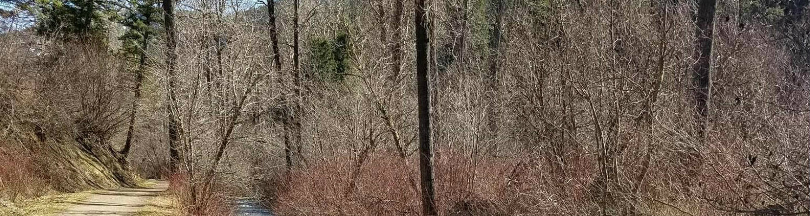

Sourdough Creek Nature Trails
- Location:Located on the south wedge of Bozeman, running Southfrom Kagy Boulevard near the Valley View Gold Club to Geldenstein Road.
- Trail Type:An easy off-road family ride near town along a beautiful stream, with good opportunities to see wildlife, especially birds.
- Distance: 4.3 total miles
- Skill Level: Easy
Emerald Lake/Heather Lake
- Location: South of Bozeman down Hyalite Canyon road, about a mile past the waterfall.
- Trail Type:100% single track mountain bike trail.
- Distance: 9 total miles
- Skill Level: Advanced skills